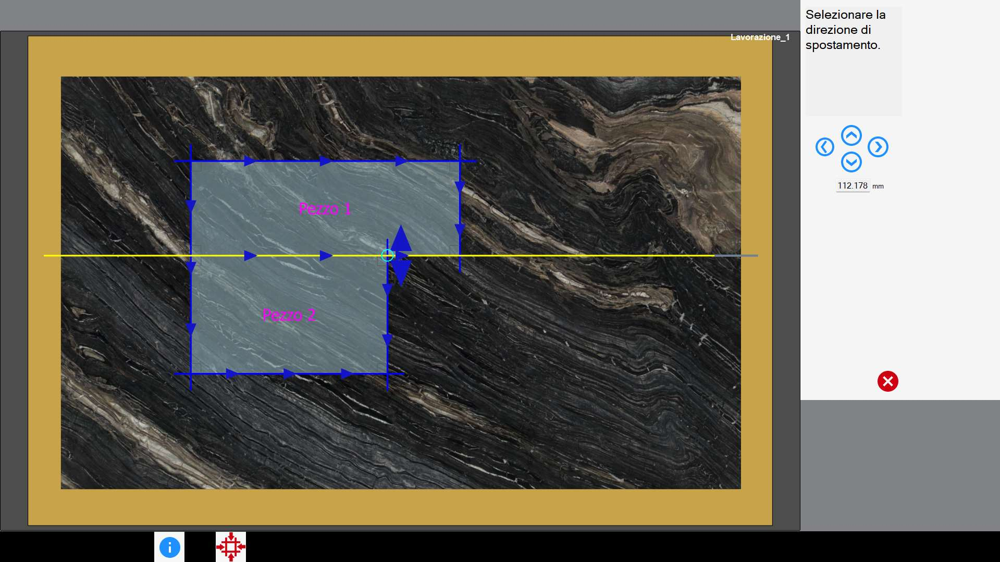
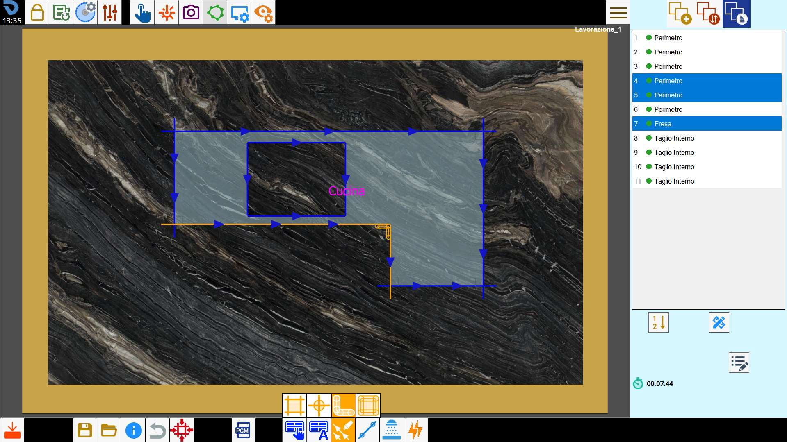
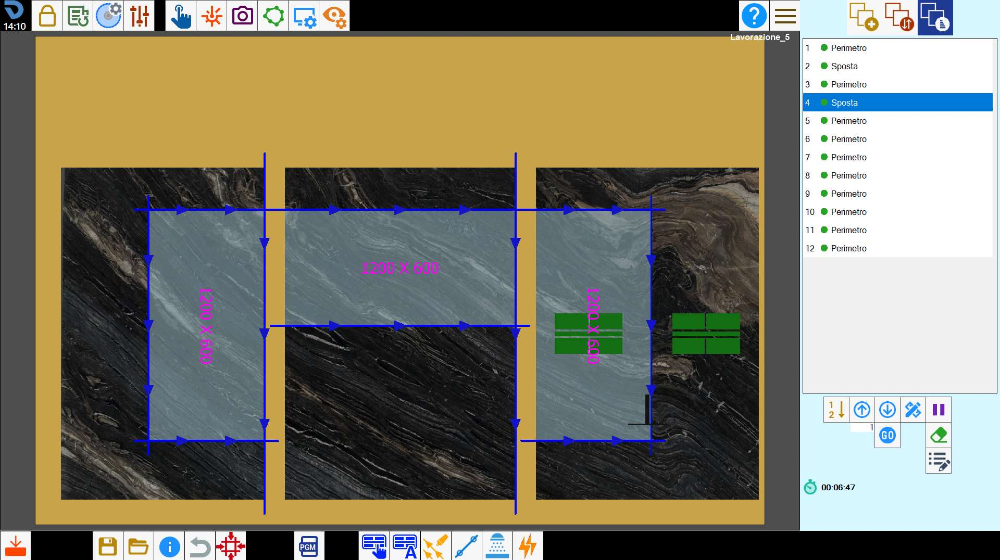
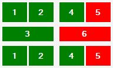

Mit dieser Funktion kann die Platte geteilt und das Material mit Saugnäpfen verschoben werden.

Schaltflächen
 | Manuelle Handhabung |
 | Automatische Handhabung |
Manuelle Handhabung
Mit dieser Funktion kann der Bediener die Platte mithilfe von Schnitten teilen und das Material mit Saugnäpfen in die gewünschte Position verschieben.
Je nach Anzahl der ausgewählten Schnitte stehen bei dieser Funktion zwei Modi zur Verfügung.
Einzelauswahlmodus
Um eine Bewegung mit Saugnäpfen auszuführen, muss ein Scheibenschnitt – linear oder als Bogen – ausgewählt und die Schaltfläche gedrückt werden.
Der Schnitt wird, sofern möglich, bis zum Plattenrand verlängert.
Ist der ausgewählte Schnitt geneigt, wird automatisch ein zusätzlicher linearer Schnitt hinzugefügt, damit die Platte geteilt werden kann.
Daraufhin öffnet sich das folgende Panel, in dem Richtung, Bewegungsrichtung und Abstand der gewünschten Verschiebung festgelegt werden können.

Im rechten Bereich befinden sich folgende Schaltflächen:
 | Richtungsverschiebung |
Einen Pfeil im Arbeitsbereich oder eine der Schaltflächen rechts auswählen, um Richtung und Bewegungsrichtung der Verschiebung festzulegen.
Die Platte wird geteilt und entsprechend dem ausgewählten Schnitttyp verschoben.
Der Verschiebeabstand der Platte kann in beiden Fällen im Textfeld unter den vier Richtungsschaltflächen geändert werden.
Der ausgewählte Schnitt wird in der Liste der auszuführenden Schnitte so weit oben wie möglich positioniert. Unmittelbar danach wird die Bewegung mit den Saugnäpfen ausgeführt.
Mehrfachauswahlmodus
Der Mehrfachauswahlmodus ermöglicht das Anheben von Werkstücken beliebiger Form. Dazu müssen die gewünschten Schnitte zum Teilen der Platte mithilfe des Mehrfachauswahlmodus ausgewählt werden.

Nach der Auswahl die Schaltfläche drücken, um den Vorgang zu starten.
Die ausgewählten Schnitte werden, sofern möglich, so verlängert, dass sie einen durchgehenden Pfad bilden, der die Platte teilen kann. Sind einer oder mehrere ausgewählte Schnitte geneigt, werden sie automatisch durch nicht geneigte Schnitte ersetzt.
Daraufhin öffnet sich das folgende Panel.

Nach Auswahl des zu verschiebenden Plattenteils kann die Bewegung durch Ziehen im Arbeitsbereich oder mit einer der folgenden Schaltflächen festgelegt werden:
 | Schritt |
 | Verschiebung entlang der Achsen |
 | Schnittkollision prüfen |
 | Ursprüngliche Position wiederherstellen |
Nach der Bestätigung werden die ausgewählten Schnitte an den Anfang der Liste der auszuführenden Schnitte gesetzt. Unmittelbar danach wird die Bewegung mit den Saugnäpfen ausgeführt.

Der Mehrfachauswahlmodus ermöglicht das Anheben von Werkstücken beliebiger Form und damit auch auskragender Werkstücke.
Die Prüfung der Durchführbarkeit der Bewegung liegt in der Verantwortung des Bedieners.
Regeln für eine gültige Schnittauswahl
Damit die Platte korrekt geteilt werden kann, müssen bei der Auswahl der Schnitte einige Vorgaben beachtet werden.
Die ausgewählten Schnitte können Scheibenschnitte (Geraden oder Bögen), Fräsbearbeitungen und Mehrfachbohrungen an Ecken sein.
Die ausgewählten Schnitte müssen einen Pfad bilden können, der die Platte in zwei Teile trennt. Die Auswahl von Schnitten, die einen geschlossenen Pfad bilden, ist nicht zulässig.
Das Programm verlängert lineare Scheibenschnitte automatisch, bis eine Lösung zum Teilen der Platte gefunden wird. Bogenschnitte, Fräsbearbeitungen und Bohrungen werden dagegen nicht automatisch geändert.
Daher wird empfohlen, als ersten und letzten Schnitt des Pfads lineare Scheibenschnitte zu verwenden.Bei Innenecken, an denen der Scheibenrest eine vollständige Materialtrennung verhindert, müssen Eckfräsungen oder Mehrfachbohrungen eingefügt werden.
Die Eindringtiefe der ausgewählten Schnitte muss ausreichen, um die Platte zu trennen.
Der erste und der letzte Schnitt müssen zwingend aus der Platte herausführen können.
Meldung Vorgang nicht möglich
Wenn das Programm die Handhabung als nicht durchführbar einstuft, können folgende Ursachen vorliegen:
Die ausgewählten Schnitte reichen nicht aus, um einen Pfad zu erzeugen, der die Platte in zwei Teile trennt;
Die ausgewählten Schnitte bilden einen geschlossenen Pfad;
Die ausgewählten Schnitte können das Werkstück aufgrund des Scheibenrests nicht vollständig trennen;
Die Verlängerung der ausgewählten Schnitte würde andere Werkstücke beschädigen;
Die Eindringtiefe mindestens eines ausgewählten Schnitts reicht nicht aus, um die Platte zu trennen;
Automatische Handhabung
Mit dieser Funktion versucht das Programm automatisch Situationen zu lösen, in denen ein oder mehrere Werkstücke im Arbeitsbereich durch andere Schnitte beschädigt werden.

Der Algorithmus analysiert die Anordnung der Schnitte und bestimmt selbstständig, wie und wo die Bewegungen ausgeführt werden sollen, um die Reihenfolge der Vorgänge zu optimieren.

Es ist jedoch zu beachten, dass die automatische Berechnung nicht alle Fälle bewältigen kann. In besonders komplexen Situationen kann ein manueller Eingriff erforderlich sein, um die Bewegungen abzuschließen oder zu korrigieren.
Position der Saugnäpfe ändern
In dieser Phase kann der Bediener sowohl die Greifposition der Saugnäpfe als auch die Aktivierung der zugehörigen Vakuumbereiche ändern, um einen optimalen und sicheren Halt des Materials zu gewährleisten.
Dazu den Eintrag „Verschieben“ in der Liste auswählen und die Schaltfläche zum Ändern der Schnitte drücken.

Mit den Schaltflächen in diesem Panel kann der Bediener mit den Saugnäpfen interagieren.
| Richtungsverschiebung |
 | Drehung der Saugnäpfe |
 | Schema der Saugnapfgruppe |